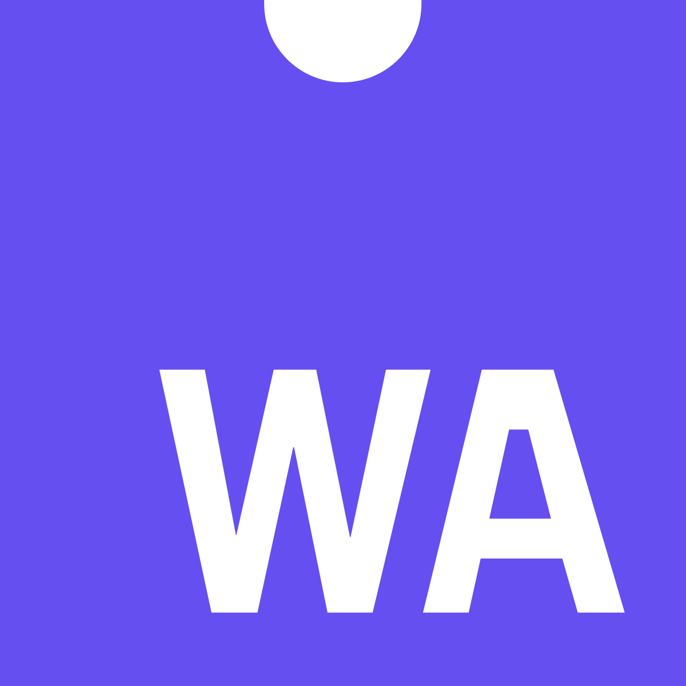

Smith
Unleashing Neural Network Performance Across All Hardware
The Challenge
- Diverse hardware ecosystems
- Dominance of specific APIs like CUDA
- Customers forced to rely on NVIDIA GPUs
Current State of the Art
- TensorFlow and PyTorch dominate
- Rely on manually optimized kernels
- High performance confined to specific platforms
| Nvidia | Amd | Intel | Huawei | ... | Apple | |
|---|---|---|---|---|---|---|
| Kernel 1 | ✓ | ✓ | ✓ | |||
| Kernel 2 | ✓ | ✓ | ✓ | ✓ | ||
| Kernel 3 | ✓ | ✓ | ✓ | ✓ | ||
| Kernel 4 | ✓ | ✓ | ✓ | |||
| ... | ||||||
| Kernel N | ✓ | ✓ | ✓ | ✓ |
Introducing Smith
- A single, open-source language
- Compiles to CPU and GPU backends
- Ensures optimal performance on all devices
- Targets clients, servers, IoT devices, robots
Roadmap and Milestones
- Year 1: WebAssembly for CPU support
- Year 2: WebGPU for GPU support
- Future targets: XLA, LLVM, etc

Funding Objectives
- Funding goal: $10 million
- Enable full-time development on Smith
- Facilitate open source ecosystem
Join Smith
Invest in the future of neural networks. Help diversify hardware utilization in AI. Strengthen and expand market reach.